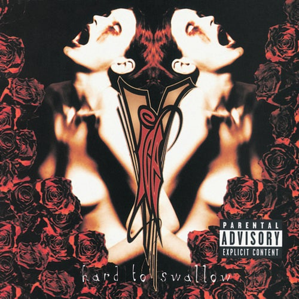

1

Guns N' Roses — Chinese Democracy
2 hours, 27 minutes, 11 seconds
+
2

Machine Head – Supercharger
2 hours, 16 minutes, 54 seconds
+
3

Mr Blobby – Mr Blobby: The Album
1 hour, 58 minutes, 1 second
+
4

Billy Idol – Cyberpunk
1 hour, 51 minutes, 4 seconds
+
5

Vanilla Ice – Hard to Swallow
1 hour, 50 minutes, 31 seconds
+